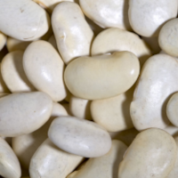
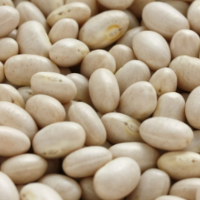
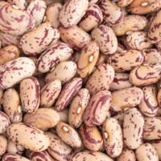
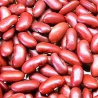
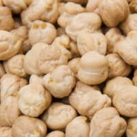
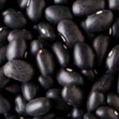
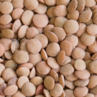
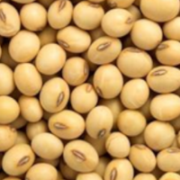

The Goodness of Beans
lima beans

Also known as butter beans.
navy beans

Also known as haricot beans, it is one of several types of white beans, including lima beans and cannellini beans.
pinto beans

The most popular bean in Northern Mexico and Southwestern United States, according to Wikipedia.
kidney beans

One of two types of red beans. The other is the smaller adzuki bean, not featured here.
garbanzo beans

Also known as chickpeas. Chana Masala is a staple Indian chickpea dish.
black beans

Also known as black turtle beans; it is popular in Latin America. In Asia, black soya beans are also called black beans.
lentils

Lentils come in several colors, including orange, green and brown. A staple of Indian cuisine.
soya beans

Also known as soybeans, its nutritional profile is slightly different from the other beans. Eat it whole for optimum nutrition.
Hover your mouse over the images for more information.
Data: whfoods.org
Vitamin B1 thiamine
Vitamin B2 riboflavin
Vitamin B3 niacin
Vitamin B5 pantothenic acid
Vitamin B6 pyridoxine
Vitamin B9 folic acid
Vitamin C
Vitamin E
Vitamin K1 phylloquinone
Zinc
Iron
Copper
Magnesium
Potassium
Calcium
Phosphorus
Manganese
Selenium
Omega-3 Fatty Acids